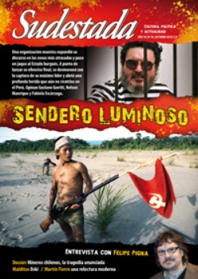

Buscar
Los de abajo
La noticia golpea. 33 mineros sepultados a centenares de metros de profundidad, bajo toneladas de roca, en una mina del norte chileno. Tras dos semanas en que se piensa lo peor, sobreviene un nuevo capítulo. Los mineros están vivos. Las letras rojas garrapateadas sobre un papel son el primer indicio que quedará de manifiesto, horas después, con las imágenes de una cámara. Sin embargo, hay que intentar mantener la racionalidad frente al impacto emocional de dichos registros. No pueden olvidarse asuntos cruciales de este suceso y de la historia de la minería en Chile. Porque esto no es nuevo. Porque esto es indicador de las zonas ocultas del cacareado progreso económico chileno donde, justamente, es su clase trabajadora la que se encuentra atrapada en medio de la precariedad laboral. Una crónica que intenta reflexionar acerca de lo acaecido en la sierra de la región de Atacama. A ella, se suman las palabras de Igor Goicovic, historiador social chileno. por Felipe Montalva
Edición N° 93
Octubre 2010
Revista bimensual
Comprar edición impresaSumario
- Sendero Luminoso: de Mariátegui al terror rojo
- El negocio más rentable
- "Las revoluciones, cuando el poder es sanguinario, hay que hacerlas a la fuerza"
- Los de abajo
- Paisajes surrealistas
- Oski: La sombra del tornillo
- Martín Fierro: un hombre de campo
- "El humor no es que te hagan cosquillas"
Compartir Articulo
Uno."Frente a la galería de entrada abandonaron la improvisada jaula y penetraron al interior. Una calma aterradora reinaba allí, no se veía un rayo de luz y todo estaba limpio de obstáculos: no había rastro de vagonetas ni de maderos; las poleas, los cables, las cuerdas de señales, todo había sido barrido por la violencia del aire empujado por la explosión. Aquella soledad los sobrecogió y una angustia mortal oprimió sus corazones. ¿Habían muerto todos los compañeros?".
Dos.El relato inicial no es una narración de lo ocurrido el pasado 5 de agosto en la mina San José. Se trata de un fragmento del cuento "El grisú" de Baldomero Lillo, escritor chileno de inicios del siglo XX, cuyas narraciones contenidas en el libro Sub Terra dan cuenta de las durísimas condiciones de vida y trabajo de los mineros del carbón, en la cuenca del golfo de Arauco, en el sur chileno. Ellos, al igual que sus compañeros de la mina San José, se sumergían centenares de metros bajo tierra para cavar, picotear y extraer el mineral desde las entrañas de la tierra. Ha cambiado la tecnología pero otras cosas, no. "Durante el siglo XIX, las explotaciones mineras se desarrollaban de manera precaria, intensificando la explotación de la fuerza de trabajo. Hoy día la minería dispone de un sofisticado equipamiento tanto para la extracción, para el traslado de mineral y, especialmente, para el aseguramiento de las obras. Esto es, precisamente, lo que hace más inaceptable la tragedia -señala Igor Goicovic-. El derrumbe es, sin duda, un hecho eventual, pero el colapso de la mina se relaciona, de acuerdo con los informes entregados por los expertos, con las precariedades que rodeaban el trabajo de los mineros. Y ello, evidentemente, es responsabilidad de los patrones".
La historia de la minería en Chile también puede entenderse como la lucha de los mineros por las mejoras de sus condiciones laborales y de vida. Frente a los patrones, o al Estado mismo. En ese sentido, un rasgo que habría que sopesar es el carácter eminentemente privado de la explotación minera. Inclusive desde antes de la independencia, fueron emprendedores privados quienes llevaron a cabo los primeras explotaciones: Por ejemplo, en la época colonial, la búsqueda de oro en los cursos superficiales de agua de la zona central. El panorama varió fuertemente, pero no la naturaleza del empresario, hacia la primera mitad del siglo XIX, con los descubrimientos de los yacimientos cupríferos de Arriero Alto, y luego los de plata en Chañarcillo, ubicado igualmente en Atacama. ¿Y los mineros? En este período, la masa humana que llegaba a trabajar a las minas eran campesinos que resistieron de diversas formas el proceso de proletarización. Como señala la historiadora María Angélica Illanes, en su texto "Azote, salario y ley. Disciplinamiento de la mano de obra en la minería atacameña (1817-1850)": "La rebeldía de los peones a nivel laboral se expresó principalmente a través de los mecanismos del 'robo' de metales y la exigencia a los patrones de 'adelantos de salarios'". Para estos primeros trabajadores mineros, el yacimiento era un lugar de trabajo de breve estadía. Entonces, para impedir estas manifestaciones de insubordinación, el patrón hubo de pedir ayuda al Estado, el gran ausente del circuito hasta ese momento. Así, se implantarían leyes policiales que castigarían con penas de azote a los peones. Dignas de subrayarse, también, son las leyes que penan las conductas de embriaguez y clausuran los espacios de socialización del mundo popular, como eran las chinganas -tabernas populares- desde mediados del siglo XIX.
(La nota completa en la edición gráfica de Sudestada Nº 93 - Octubre 2010)
Comentarios
Felipe Montalva
Articulos más vistos


LIBRERÍA SUDESTADA

Colección infantil

Distribuidora de Libros

Suscripción

Sudestada en URUGUAY

Otros articulos de esta edición
 Entre líneas
Entre líneas
Martín Fierro: un hombre de campo
¿Es posible una relectura de un clásico del gauchesco criollo y fundante de la literatura en tiempos de concentración de ...
 Malditos
Malditos
Oski: La sombra del tornillo
1979 en Buenos Aires. "¿Puede obsequiarme un dibujo para mi mujer?", le pidió el general al viejo ilustrador, casi como ...
 Nota de tapa
Nota de tapa
Sendero Luminoso: de Mariátegui al terror rojo
Una organización de origen maoísta expandió su discurso revolucionario en las zonas más atrasadas y puso en jaque al Estado ...
 El erotismo según Eduardo Santellán
El erotismo según Eduardo Santellán
Paisajes surrealistas
Húmedo y vertical es el nombre del libro que contiene parte del catálogo soñado por un dibujante singular, capaz de ...
 Entrevista con Felipe Pigna
Entrevista con Felipe Pigna
"Las revoluciones, cuando el poder es sanguinario, hay que hacerlas a la fuerza"
La misma historia que durante años se enseñó en las escuelas de un modo tedioso, arduo, anquilosado, no se condice ...
 Editorial
Editorial
El negocio más rentable
El sistema de clientelismo en las calles, como todo, ha variado de modo sustancial con el paso del tiempo y ...